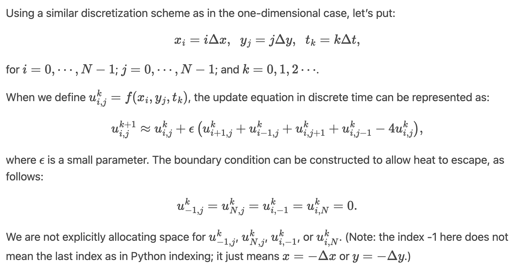
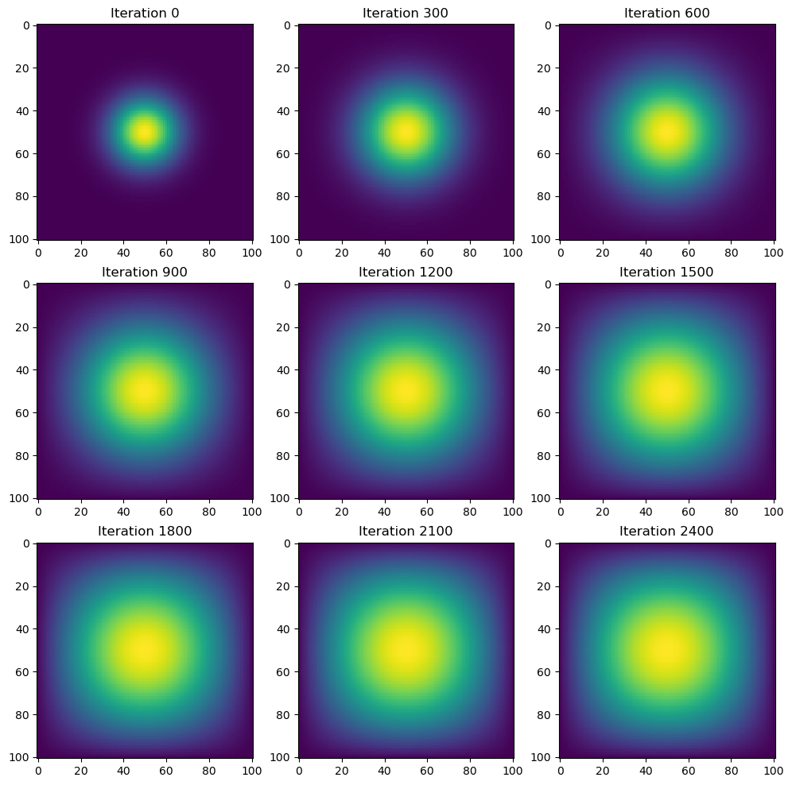
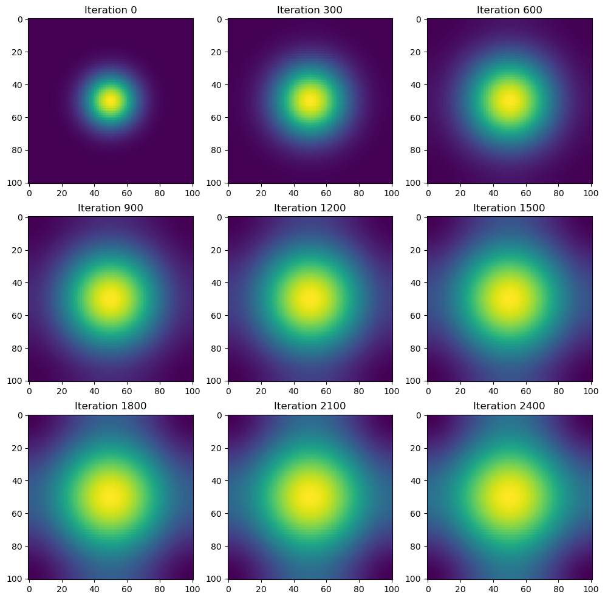

# Set the default Plotly renderer to "iframe"
import plotly.io as pio
pio.renderers.default = "iframe"Conduct a simulation of two-dimensional heat diffusion in various ways
Table of Contents
1. Introduction
2. Initial conditions
3. Methods
3.1 Matrix Multiplication
3.2 Sparse matrix in JAX
3.3 Direct operation with `numpy`
3.4 Direction operation with `jax`1. Introduction
Two-dimensional heat diffusion refers to the process by which heat spreads across a surface or within a two-dimensional region over time. It’s governed by the heat equation, which describes how the temperature at any point in the region changes over time due to the flow of heat.
The heat equation in two dimensions can be expressed as:
\[ \frac{\partial u}{\partial t} = \alpha \left( \frac{\partial^2 u}{\partial x^2} + \frac{\partial^2 u}{\partial y^2} \right) \]
Where: - \(u\) is the temperature distribution across the two-dimensional region, which typically depends on the spatial coordinates \((x, y)\) and time \(t\). - \(\alpha\) is the thermal diffusivity, which represents how readily heat spreads through the material. - \(\frac{{\partial u}}{{\partial t}}\) represents the rate of change of temperature with respect to time. - \(\frac{{\partial^2 u}}{{\partial x^2}}\) and \(\frac{{\partial^2 u}}{{\partial y^2}}\) represent the second spatial derivatives of temperature with respect to the \(x\) and \(y\) coordinates, respectively. They describe how temperature changes spatially along the \(x\) and \(y\) directions.
The heat equation essentially states that the change in temperature at any point is proportional to the rate of change of temperature over time and the spatial curvature of the temperature distribution.
To simulate two-dimensional heat diffusion numerically, we discretize the region into a grid of points. At each point on the grid, we calculate the change in temperature over time based on the temperature differences with neighboring points, following the heat equation. This can be done using finite difference methods or other numerical techniques.

The simulation proceeds in discrete time steps, with the temperature at each point being updated based on the temperatures of neighboring points and the thermal diffusivity. Over time, the heat spreads from hotter regions to cooler regions, gradually evening out the temperature distribution until it reaches equilibrium.
Visualizing the simulation results often involves plotting heatmaps or contour plots, showing how the temperature evolves across the two-dimensional region over time.
Let’s get start it!
2. Initial conditions
# import libraries (you should be familiar with these 2!)
import numpy as np
from matplotlib import pyplot as pltFor this tutorial, we will use:
# set the grid to have 101 rows and 101 columns.
N = 101
# stability constant or the time step size used in numerical simulations we use is 0.2
epsilon = 0.2
# construct initial condition: 1 unit of heat at midpoint
# initialize a two-dimensional NumPy array `u0` of size `N` by `N`, filled with zeros. This array represents the initial temperature distribution across the grid.
u0 = np.zeros((N, N))
# sets the value at the center of the grid to 1.0, representing one unit of heat.
# The expression `int(N/2)` calculates the index of the center of the grid in both dimensions, and the value 1.0 is assigned to that cell
u0[int(N/2), int(N/2)] = 1.0
# This function displays the array as an image, where each element of the array corresponds to a pixel in the image, and the value of the element determines the color of the pixel.
# Since `u0` is a two-dimensional array, `imshow()` will display a heatmap where lighter colors represent higher temperatures and darker colors represent lower temperatures.
plt.imshow(u0)
3. Methods
3.1 Matrix Multiplication
# you might have seen this in the climate change tutorial before
import inspect
from heat_equation import advance_time_matvecmul
from heat_equation import get_A
# Print the source code of the 'advance_time_matvecmul' function
print(inspect.getsource(advance_time_matvecmul))def advance_time_matvecmul(A, u, epsilon):
"""Advances the simulation by one timestep, via matrix-vector multiplication
Args:
A: The 2d finite difference matrix, N^2 x N^2.
u: N x N grid state at timestep k.
epsilon: stability constant.
Returns:
N x N Grid state at timestep k+1.
"""
N = int(np.sqrt(A.shape[0]))
u = u + epsilon * (A @ u.flatten()).reshape((N, N))
return u
advance_time_matvecmul advances a simulation of the heat equation by one timestep using matrix-vector multiplication.
Let’s break down the function and its components:
advance_time_matvecmultakes three parameters:A: The 2D finite difference matrix representing the discretized differential operator of the heat equation. It has dimensions \(N^2\) times \(N^2\).u: The current state of the temperature grid at timestep k. It’s a 2D array with dimensions N times N.epsilon: The stability constant or time step size used in the simulation.
N = int(np.sqrt(A.shape[0])): calculates the size of the grid based on the shape of the finite difference matrixA. SinceAis square with dimensions \(N^2\) times \(N^2\), the square root of the number of rows (or columns) gives us N, the size of the grid in one dimension.u = u + epsilon * (A @ u.flatten()).reshape((N, N)): advances the temperature griduby one timestep. It does this by performing matrix-vector multiplication between the finite difference matrixAand the flattened temperature gridu. The result is then reshaped to a 2D array with dimensions N times N. This operation represents the application of the discrete heat equation to update the temperature distribution.return u: returns the updated temperature grid after advancing it by one timestep.
In summary, this function takes the current state of the temperature grid, applies the heat equation using matrix-vector multiplication, and returns the updated temperature grid for the next timestep.
# Print the source code of the 'get_A' function
print(inspect.getsource(get_A))def get_A(N):
"""
Constructs the finite difference matrix A for a 2D Laplace operator.
Parameters:
- N: int
The size of the grid in one dimension.
Returns:
array_like
The finite difference matrix A representing the discretized Laplace operator.
This function constructs the finite difference matrix A for a 2D Laplace operator based on the size of the grid N.
The Laplace operator is discretized using a five-point stencil finite difference scheme.
The resulting matrix A is a square matrix of size N^2 x N^2.
"""
n = N * N
diagonals = [-4 * np.ones(n), np.ones(n-1), np.ones(n-1), np.ones(n-N), np.ones(n-N)]
diagonals[1][(N-1)::N] = 0
diagonals[2][(N-1)::N] = 0
A = np.diag(diagonals[0]) + np.diag(diagonals[1], 1) + np.diag(diagonals[2], -1) + np.diag(diagonals[3], N) + np.diag(diagonals[4], -N)
return A
get_A(N) generates the finite difference matrix A for the 2D discretization of the Laplace operator.
Let’s break down the function and its components: 1. get_A that takes a single parameter N, which represents the size of the grid in one dimension.
n = N * N: calculates the total number of grid points in the 2D grid by squaring the size of the grid in one dimension.diagonals = [-4 * np.ones(n), np.ones(n-1), np.ones(n-1), np.ones(n-N), np.ones(n-N)]: initializes a listdiagonalscontaining arrays representing the diagonals of the finite difference matrixA.- The first diagonal is set to -4 for each element (corresponding to the main diagonal).
- The second and third diagonals are set to 1 for each element, except for the last element in each row, where the value is 0. This is because these diagonals represent the elements directly adjacent to the main diagonal, excluding the edges.
- The fourth and fifth diagonals are also set to 1, representing the elements that are N positions away from the main diagonal, corresponding to the elements above and below the main diagonal.
diagonals[1][(N-1)::N] = 0anddiagonals[2][(N-1)::N] = 0: set the elements of the second and third diagonals to 0 at the positions corresponding to the last element in each row. This is done to ensure that the finite difference matrixArespects the boundary conditions of the grid.A = np.diag(diagonals[0]) + np.diag(diagonals[1], 1) + np.diag(diagonals[2], -1) + np.diag(diagonals[3], N) + np.diag(diagonals[4], -N): constructs the finite difference matrixAby summing the diagonals specified in thediagonalslist.np.diag(diagonals[0])constructs a diagonal matrix using the main diagonal elements.np.diag(diagonals[1], 1)constructs a diagonal matrix using the elements from the second diagonal shifted one position to the right.np.diag(diagonals[2], -1)constructs a diagonal matrix using the elements from the third diagonal shifted one position to the left.np.diag(diagonals[3], N)constructs a diagonal matrix using the elements from the fourth diagonal shifted N positions down.np.diag(diagonals[4], -N)constructs a diagonal matrix using the elements from the fifth diagonal shifted N positions up.- The matrices are then summed together to obtain the final finite difference matrix
A.
return A: returns the constructed finite difference matrixA.
In summary, this function generates the finite difference matrix A for the 2D discretization of the Laplace operator based on the size of the grid N, taking into account the boundary conditions. This matrix is then used in advance_time_matvecmul.
from timeit import default_timer
def heat_plot(f, u0, epsilon, A=None):
"""
Visualizes the progression of a simulation over multiple time steps.
Parameters:
- f: function
The method used to advance the simulation by one time step.
If A is provided, f should take three parameters (A, u, epsilon).
Otherwise, f should take two parameters (u, epsilon).
- u0: array_like
The initial state of the simulation.
- epsilon: float
The stability constant or time step size.
- A: array_like, optional
The finite difference matrix representing the discretized differential operator of the simulation.
Returns:
None
This function iterates over the specified number of time steps, advances the simulation using the provided method f,
and visualizes the progression of the simulation at milestone iterations. It also prints the total computation time.
"""
intermediate_solutions = []
start = default_timer()
u = u0.copy()
for i in range(1,2701):
if A is not None:
u = f(A,u,epsilon)
else:
u = f(u, epsilon)
if i % 300 == 0:
intermediate_solutions.append(u.copy())
end = default_timer()
computation_time = end - start
print(f"Total computation time: {computation_time} seconds")
fig, axs = plt.subplots(3, 3, figsize=(12, 12))
for i in range(3):
for j in range(3):
idx = i * 3 + j
axs[i, j].imshow(intermediate_solutions[idx], interpolation='nearest')
axs[i, j].set_title(f"Iteration {idx * visualization_interval}")
plt.show() Just for convenience, I created a generic function for visualizing the progression of a simulation over multiple time steps.
Let’s break it down: 1. heat_plot that takes four parameters: - f: A function representing the method used to advance the simulation by one time step. It can either take two parameters (u, epsilon) or three parameters (A, u, epsilon) depending on whether A is provided or not. - u0: The initial state of the simulation. - epsilon: A parameter representing the stability constant or time step size. - A: (Optional) The finite difference matrix representing the discretized differential operator of the simulation.
intermediate_solutions = []: initializes an empty list to store intermediate states of the simulation for visualization purposes since we should not cont the time for generating plot so we should store it for ploting use with a frequency of 300.start = default_timer(): records the start time of the computation.u = u0.copy(): creates a copy of the initial stateu0to ensure that the original state is not modified during the simulation.for i in range(1,2701):: starts a loop iterating over the range from 1 to 2700 (inclusive), representing the number of time steps in the simulation.if A is not None:: checks if the finite difference matrixAis provided. If it is notNone, it indicates that the functionftakes three parameters (A,u,epsilon). Otherwise, it takes two parameters (u,epsilon). For first 2 method, we defined A and for last 2 we are not gonna define it.u = f(A,u,epsilon)oru = f(u, epsilon): Depending on whetherAis provided or not, this line advances the simulation by one time step using the functionf. IfAis provided,fis called with three parameters (A,u,epsilon), otherwise with two parameters (u,epsilon).if i % 300 == 0:: checks if the current iteration is a multiple of 300. If it is, it indicates a milestone iteration for visualization, and the current stateuis appended to theintermediate_solutionslist.end = default_timer(): records the end time of the computation.computation_time = end - start: calculates the total computation time by subtracting the start time from the end time.print(f"Total computation time: {computation_time} seconds"): prints the total computation time to the console.Visualization: This section creates a 3x3 grid of subplots using
plt.subplots(3, 3, figsize=(12, 12)). It iterates over theintermediate_solutionslist and plots each intermediate state on a subplot. Each subplot is titled with the corresponding iteration number.
Let me show you the work!
visualization_interval = 300A = get_A(N)heat_plot(advance_time_matvecmul, u0, epsilon, A)Total computation time: 20.457517958944663 seconds
Beautiful plot but the running time is 20.457517958944663 seconds, which is pretty long. The reason why this took this much of time is that most of operations are wasted for computing zeros.
Let’s use the data structure that exploits a lot of zeros in the matrix A: sparse matrix data structures. The JAX package holds an experimental sparse matrix support. We can use the batched coordinate (BCOO) format to only use O(N^2) space for the matrix, and only take O(N^2) time for each update.
3.2 Sparse matrix in JAX
Jax
JAX is a machine learning package putting autodiff, XLA (accelerated linear algebra), and just-in-time compilation together, created by Google.
In Python, we already have a couple of widely-used machine learning packages, PyTorch and TensorFlow. Why do we start with something else?
Short answer: because it can be considerably faster. Over the years, when I was using another just-in-time compilation language for research, it was giving me significant amount of flexibility while maintaining its speed.
Python is a slow language at its core. Its development is highly focused on flexibility. However, due to its flexibility, a lot of highly performant packages were built, often interfacing with other languages. What just-in-time (JIT) compilation adds to it is that you can write highly performant code without you directly dealing with the lower-level language (writing C or C++), even when those functionalities are not readily written in another package (numpy, scipy, tensorflow, or pytorch).
For example, a small neural network model (GoogleNet) on CIFAR10 can be trained in JAX 3x faster than in PyTorch with a similar setup. JAX enables this speedup by compiling functions and numerical programs for accelerators (GPU/TPU) just in time, finding the optimal utilization of the hardware.
Frameworks with dynamic computation graphs like PyTorch cannot achieve the same efficiency, since they cannot anticipate the next operations before the user calls them. For example, in an Inception block of GoogleNet, multiple convolutional layers (which we will learn soon) are applied in parallel on the same input. JAX can optimize the execution of this layer by compiling the whole forward pass for the available accelerator and fusing operations where possible, reducing memory access and speeding up execution.
In contrast, when calling the first convolutional layer in PyTorch, the framework does not know that multiple convolutions on the same feature map will follow. It sends each operation one by one to the GPU, and can only adapt the execution after seeing the next Python calls. Hence, JAX can make more efficient use of the GPU than, for instance, PyTorch.
The downside
Everything comes with a price. In order to efficiently compile programs just-in-time in JAX, the functions need to be written with certain constraints.
- Functions are not allowed to have side effects.
- They can’t affect any variable outside their namespaces – “pure functions” in functional programming nomenclature.
- Cannot mutate input arrays.
- Random number generation procedures are generally written in a way that mutates global states – JAX has its own way to write random number generation.
- Even having
print()inside a function is a side effect!
This kind of functional programming approach is not something unique to JAX in data analytics; it has previously been used in places like Apache Spark, for large-scale parallel data analytics.
- JAX compiles functions based on the expected shapes of all arrays/tensors in the function.
- It becomes an issue if the shapes or the control flow within the function depends on the values of arrays.
y = x[x>3]?
Still, in a lot of numerical computations, it is straightforward to write functions within these constraints.
Many other great JAX tutorials are there, including:
- JAX 101 with many subtutorials on individual parts of JAX
- JAX - The Sharp Bits discusses the constraints of JAX and how to overcome them
- Jax for the Impatient for a quick intro to JAX with focus on deep learning
from jax.experimental import sparse
import jax.numpy as jnp
import jaxsparse module from the jax.experimental package: JAX is a library for numerical computing and automatic differentiation, and it provides experimental support for sparse matrix operations. The sparse module contains functions and data structures for working with sparse matrices in JAX, such as converting between dense and sparse representations, performing sparse matrix-vector multiplication, and solving linear systems with sparse matrices.
jnp: NumPy-compatible array manipulation library provided by JAX and aliases it as jnp. JAX’s NumPy (jnp) offers functions and data structures similar to NumPy for manipulating arrays, performing mathematical operations, and working with numerical data. However, JAX’s NumPy is designed to work seamlessly with JAX’s automatic differentiation capabilities, allowing users to compute gradients of functions involving array operations efficiently.
from heat_equation import get_sparse_A
# Print the source code of the 'get_A_sparse' function
print(inspect.getsource(get_sparse_A))def get_sparse_A(N):
"""
Constructs a sparse representation of the finite difference matrix A for a 2D Laplace operator.
Parameters:
- N: int
The size of the grid in one dimension.
Returns:
sparse.BCOO
A sparse representation of the finite difference matrix A.
This function constructs the finite difference matrix A for a 2D Laplace operator based on the size of the grid N,
and converts it into a sparse representation using the BCOO format.
The Laplace operator is discretized using a five-point stencil finite difference scheme.
The resulting sparse matrix A_sp_matrix is a sparse matrix of size N^2 x N^2.
"""
A = get_A(N)
A_sp_matrix = sparse.BCOO.fromdense(A)
return A_sp_matrix
The main high-level sparse object currently available in JAX is the BCOO, or batched coordinate sparse array, which offers a compressed storage format compatible with JAX transformations.
Find more info about BCOO: https://jax.readthedocs.io/en/latest/jax.experimental.sparse.html
# JIT-ed version of advance_time_matvecmul for better performance
advance_time_matvecmul_jit = jax.jit(advance_time_matvecmul)Here’s what it does:
JIT Compilation: JAX’s JIT compilation feature allows for efficient execution of functions by compiling them into optimized machine code just before they are executed. This can lead to significant performance improvements, especially for functions that are called frequently or are computationally intensive.
Compilation on Demand: When you create a JIT-compiled version of a function, JAX analyzes the function’s computation graph and generates optimized code tailored to the specific inputs it receives. This compilation process occurs on demand, the first time the function is called with a particular set of input shapes and data types.
Usage of Compiled Function: After compilation, the resulting JIT-compiled function (
advance_time_matvecmul_jitin this case) behaves like a regular Python function. However, it executes more efficiently due to the optimized machine code generated during compilation.Benefits: Using JIT compilation can lead to faster execution times, reduced memory usage, and improved performance, especially for functions involved in numerical computations or machine learning models.
A = get_sparse_A(N)
heat_plot(advance_time_matvecmul_jit, u0, epsilon, A)Total computation time: 0.5534884999506176 seconds
0.5534884999506176 seconds in Method 2 compares to 20.457517958944663 seconds in Method 1, the speed increase enomoursly by almost 40 times!
3.3 Direct operation with numpy
We’ll implement a function called advance_time_numpy to advance the solution of the heat equation by one timestep using direct operations with NumPy. Here’s the implementation of the function:
from heat_equation import advance_time_numpy
# Print the source code of the 'advance_time_jax' function
print(inspect.getsource(advance_time_numpy))def advance_time_numpy(u, epsilon):
# Compute the Laplacian using central differences
laplacian = (
np.roll(u, 1, axis=0) + # Top
np.roll(u, -1, axis=0) + # Bottom
np.roll(u, 1, axis=1) + # Left
np.roll(u, -1, axis=1) - # Right
4 * u # Center
)
# Update the grid state using the heat equation
u = u + epsilon * laplacian
return u
np.roll is used to shift the elements of the array u along the specified axes (0 for rows and 1 for columns). By summing the shifted arrays, we effectively compute the Laplacian using central differences without the need for padding the array with zeros.
You can find more info here: https://numpy.org/doc/stable/reference/generated/numpy.roll.html
This function advances the solution of the heat equation by one timestep using NumPy vectorized operations. It computes the Laplacian of the temperature grid using central differences with np.roll, and updates the grid state using the heat equation.
heat_plot(advance_time_numpy, u0, epsilon)Total computation time: 0.14709462481550872 secondsNow we have:
20.457517958944663 seconds in Method 1
0.5534884999506176 seconds in Method 2
0.14709462481550872 seconds in Method 3We are getting faster and faster!
3.4 Direction operation with jax
Now, let’s use jax to do the similar using just-in-time compilation. This function advances the simulation of the heat equation by one timestep using JAX. It computes the Laplacian of the temperature grid using central differences, and updates the grid state according to the heat equation. The Laplacian is computed with boundary conditions handled by padding the temperature grid.
from heat_equation import advance_time_jax
# Print the source code of the 'advance_time_jax' function
print(inspect.getsource(advance_time_jax))@jax.jit
def advance_time_jax(u, epsilon):
"""
Advances the solution by one timestep using JAX.
Args:
u : array_like
N x N grid state at timestep k.
epsilon : float
Stability constant.
Returns:
array_like
N x N grid state at timestep k+1.
"""
laplacian = (
jnp.roll(u, 1, axis=0) + # Top
jnp.roll(u, -1, axis=0) + # Bottom
jnp.roll(u, 1, axis=1) + # Left
jnp.roll(u, -1, axis=1) - # Right
4 * u # Center
)
# Update the grid state using the heat equation
u = u + epsilon * laplacian
return u
heat_plot(advance_time_jax, u0, epsilon)Total computation time: 0.051046375185251236 seconds
Well, this is so much faster by using jit!
Now we have:
20.457517958944663 seconds in Method 1
0.5534884999506176 seconds in Method 2
0.14709462481550872 seconds in Method 3
0.051046375185251236 seconds in Method 4Compare the implementation and performances of the four methods. Last one is the fastest and easy to write.